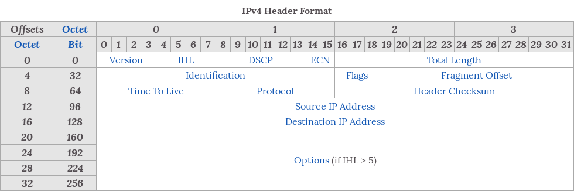
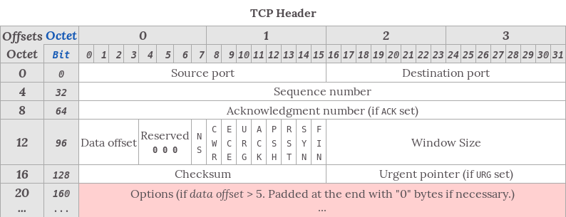
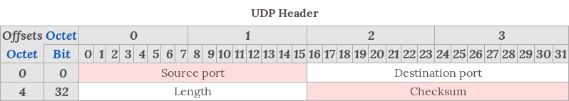

Michał Zając
tl;dr The internet is a side effect of ARPANET project
Military got fed up with people browsing their stuff.
How many bits per second can the media handle?
How long does it take for one bit to reach the other end?
8P8C connector over Cat 3 - Cat 8 cable
Optic fibres
WiFi obviously
An IPv4 address is made of 4 octets. It’s kind like an address
8.8.8.8
00001000 00001000 00001000 00001000
Source: Wikipedia
An IPv6 address is made of 8 16bit blocks
2001:0DB8:0000:0000:0000:0000:1428:57AB
2001:db8::1428:57abA client-server protocol

Source: Wikipedia
A connectionless protocol

Source: Wikipedia
Who the hell remembers IP addresses?
applover.pl instead 195.201.74.26
How to translate from applover.pl to 195.201.74.26?
DNS
| Source | Destination | Message |
|---|---|---|
| Browser | ISP DNS | Hey, got IP address of pl.wikipedia.org? |
| ISP DNS | Root DNS | Oy mate, got IP address of pl.wikipedia.org? |
| Root DNS | ISP DNS | Nope, but ask 204.74.112.1 about org domain |
| ISP DNS | org DNS | Ay fam, got IP for pl.wikipedia.org? |
| org DNS | ISP DNS | Nope, ask 216.21.226.87 about wikipedia.org domain |
| ISP DNS | wikipedia.org DNS | Hi, can I have IP address for pl.wikipedia.org? |
| wikipedia.org DNS | ISP DNS | pl.wikipedia.org is 207.142.131.245 |
| ISP DNS | Browser | pl.wikipedia.org is 207.142.131.245 |
| Browser | pl.wikipedia.org | GET / HTTP/1.1 |